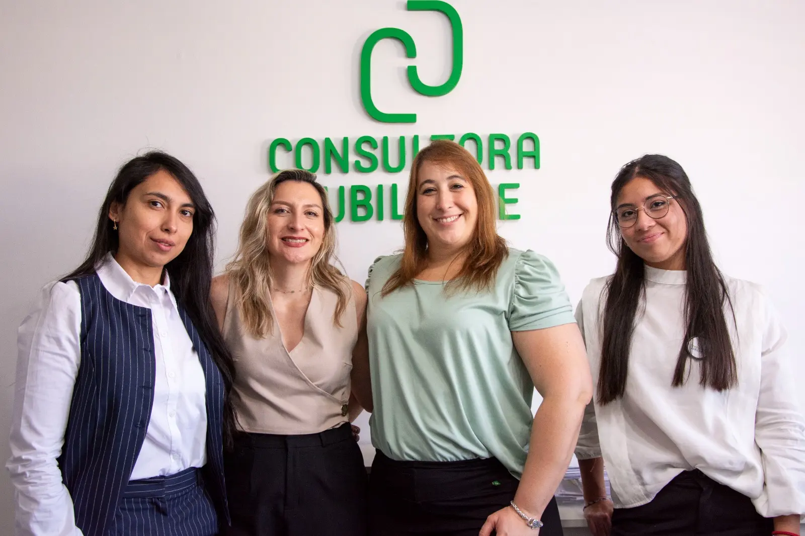

Que te encuentren.
Hacer visibles tus servicios y acercarlos al público al que querés llegar.
MARKETING DIGITAL ORGÁNICO
¿Querés que tus redes acompañen mejor los objetivos comerciales de tu empresa?
Partimos de lo que necesita tu negocio para definir qué comunicar, a quién y en qué canales. Después organizamos el contenido y la producción para sostener ese trabajo.

 HISTORIAS
HISTORIASEL PUNTO DE PARTIDA
Definimos qué interacciones tienen valor para tu empresa: consultas sobre un servicio, visitas al sitio o conversaciones con posibles clientes.
Hacer visibles tus servicios y acercarlos al público al que querés llegar.
Explicar qué hacés, cómo trabajás y qué puede esperar una persona que te consulta.
Facilitar el contacto y conectar el contenido con una consulta concreta.
UNA ESTRATEGIA INTEGRAL
Público, objetivos, mensajes y canales. Con esa base, organizamos los temas, los formatos y el calendario de publicaciones. El alcance de cada proyecto se define según las necesidades de la empresa.
FORMA DE TRABAJO
Objetivos, planificación, producción y revisión. El contenido se acuerda con tu equipo antes de publicarse.
Entender servicios, públicos, consultas frecuentes y momentos importantes.
Definir temas, formatos, fechas y prioridades en un cronograma compartido.
Crear y revisar piezas, fotografías, historias y reels a partir de material real.
Revisar el desempeño y usar lo aprendido para el siguiente ciclo.
EL EQUIPO
La coordinación conecta las decisiones de negocio con la planificación y la producción de comunicación.

Estrategia, coordinación e implementación.

Planificación, comunicación y producción junto a Hola Agencia.
CASOS DE TRABAJO
Un recorrido por la necesidad inicial, el contenido producido y los resultados de una experiencia real.

Planificación, publicaciones, historias y fotografía para explicar servicios y acompañar el vínculo con su comunidad.
Ver el caso completoHABLEMOS DE TU EMPRESA
Contame qué está pasando con tus redes, qué consultas recibís y qué te gustaría mejorar. Ese es el punto de partida para definir una propuesta.
Consultar por marketing digital